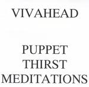

Home Artist links Label link

Vivahead - Puppet Thirst Meditations
| Artist: | Vivahead |
| Title: | Puppet Thirst Meditations |
| Label: | Pulper Music PULPER 06 |
| Length(s): | 47 minutes |
| Year(s) of release: | 2003 |
| Month of review: | [06/2005] |
Line up
Vivahead - all instruments
Tracks
| 1) | Learsi | 2.28
|
| 2) | Hint | 4.09
|
| 3) | Okay | 2.04
|
| 4) | Lunar The Pooch | 1.28
|
| 5) | Remember | 2.16
|
| 6) | Where And When | 8.10
|
| 7) | Relay Red | 5.24
|
| 8) | Z | 4.38
|
| 9) | Misfit A | 2.27
|
| 10) | F | 4.35
|
| 11) | Everytime | 4.16
|
| 12) | Puppet Thirst | 5.19
|
Summary
The music
With this release Vivahead brings us another bit of experiment. This one-man band's music might best be described as tongue in cheek electronic music. The basis is more or less melodic electronic music (although we do go off into the woods of experimentation at times) with some extra sound effects added. For instance, we get a track in which the extras sound like the squeking of one of those bath tub ducklings. Even though the piano sounds do pretty well at building something of a haunted atmosphere, the squaking nullifies the effect. Lunar The Pooch is the epitomy of dwub, featuring a mouth organ and mouth farts. Not very interesting. Where And When on the other hand sounds sort of avant prog, probably the most interesting bit on this disc, from my POV. Or rather, it would have been, had he not gone and spoiled it all by turning on his mouth fart again.
The first track still has a pretty pleasant sound, it sounds more like the intro or overture of a heavily progressive track, than that sounds like EM. The second track takes no prisoners in its EM-being, though. From than on we are dragged along on a trip round Vivahead's head. And it it's all fun we see there.
Conclusion
This album has some nice points, but overall it's pretty much an EM album with some experimental influences. If that is your cup of tea, all is well. If your approach is a bit more progressively oriented though, there is not enough to find in this release, I would say.
vivahead@lycos.co.uk
© Roberto Lambooy